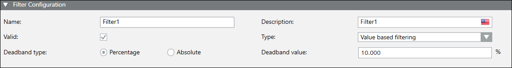

Filter Groups Workspace
The Filter Group tab contains the Filter Configuration expander that facilitates creation and configuration for a new filter group. You can configure the filter groups for value based filtering or for time interval logging. You can assign the filter group to a property in the Object Configurator tab.
On assigning a value-based filtering filter group to a property, the COVs of that property are filtered based on percentage or absolute value to optimize the data stored in the HDB. Only the COVs that are more or less than the previous logged value by an absolute/percentage value passes the filtering and is logged into the HDB.
On assigning a time interval logging filter group to a property, the COVs of that property are filtered based on interval and only the last COV received in the given interval is logged at the end of the interval to optimize the data stored in the HDB. If no COV is received in the given interval the COV logged in the previous interval is logged again at the end of the interval.

Value based filtering can only be used for integer, unsigned integer or floating point data points.
The precision of the deadband value is restricted to 3 decimal places. This can lead to small rounding differences inside filtering when using very fine segmentation of values. Consider this when configuring a filtering such as when a value changes from 50 to 55.001.
Filter Configuration Expander
The Filter Configuration expander facilitates creation and configuration of a new filter group.

Filter Configuration Expander | |
Item | Description |
Name | Type a unique name for the filter group. |
Description | Description of Filter Group. |
Valid | Checked, by default. Uncheck the Valid check box to disable the filter group. Once disabled, even if this filter group is assigned to any property, the COVs are not filtered according to the filter group definition. Only repeating values are filtered. |
Type | Value based filtering (Default), Time interval logging. |
Deadband type - Percentage | (Default selection) Applicable for value based filtering filter group type. |
Deadband type - Absolute | Applicable for value-based filtering filter group type. Change the default selection to Absolute, when you want to filter the COV logging of the property by absolute value. |
Deadband value | Applicable for value based filtering filter group type. It can be a percentage or absolute value depending on the selected deadband type. |
Interval | Applicable for time interval logging filter group type. It is the duration for which the COVs are not logged into the HDB and only the last COV received in that duration is logged at the end of the duration. Interval can have one among the following values:
For use cases, see Concept 6: Filtering with Value Filters in Examples of Archiving Concepts. |
Filter Group Toolbar
The filter group toolbar facilitates you to configure the filter group.
Filter Group Toolbar | |
| Creates a new filter group. |
| Deletes the filter group. If you have linked a filter group to a property, deleting the filter group de-links that filter group from the property. |
| Saves the currently opened filter group. |
| Saves the configuration of the currently selected filter group as a new filter group. |